Как одна цепь задаёт другую
Возьми верхнюю цепь 5′-ACGTC-3′. Напротив A ставим T, напротив C ставим G, напротив G ставим C. Читая пары слева направо, получаем под верхней цепью 3′-TGCAG-5′. Если эту же нижнюю цепь записать от её собственного 5′-конца, получится 5′-GACGT-3′. Цифры 5′ и 3′ относятся к атомам углерода в дезоксирибозе. У цепей дуплекса эти концы направлены в разные стороны.
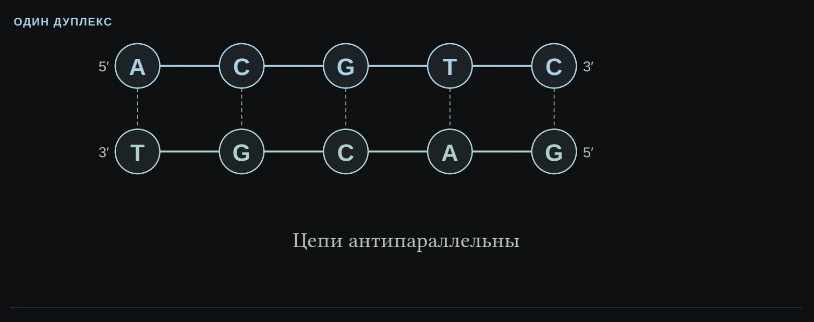
После разделения обе родительские цепи работают матрицами. Две дочерние молекулы содержат по одной старой и одной новой цепи. Именно так следует читать звездочку на дальнейших схемах: она перемещается вместе с конкретной старой нитью, даже если новое спаривание выглядит так же.
Основание, надрез и брешь
Буква обозначает азотистое основание. Оно связано со своим сахаром, а фосфаты соединяют соседние сахара в остов. Можно потерять основание и сохранить непрерывный остов. При надрезе остов разомкнут между двумя соседними звеньями. При бреши в цепи отсутствует одно звено или целый отрезок.
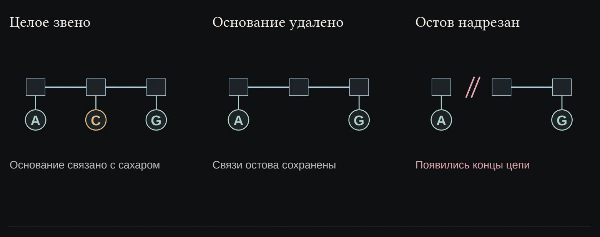
Следующий шаг начинается у свободного 3′-конца. Как полимераза удлиняет цепь →
Как полимераза удлиняет цепь
Полимераза держит матрицу и праймер, уже существующий короткий участок комплементарной цепи. Начать очередное присоединение можно от свободной гидроксильной группы 3′-OH крайнего сахара. Фермент читает матрицу 3′→5′ и удлиняет праймер 5′→3′. На рисунке растёт нижняя нить, у которой 3′ слева, поэтому стрелка смотрит влево.
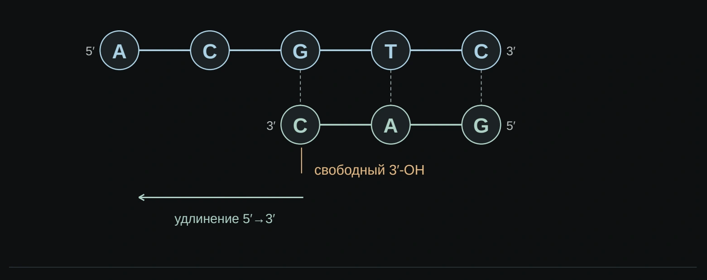
Из трифосфата остаётся одно звено
Если матричная буква G, правильный входящий субстрат dCTP. Кислород 3′-OH атакует его α-фосфат, ближайший к дезоксирибозе. Новая фосфодиэфирная связь удерживает в цепи остаток dCMP. β- и γ-фосфаты уходят вместе как пирофосфат PPᵢ. На только что вставленном сахаре свободен собственный 3′-OH, и реакция может повториться.
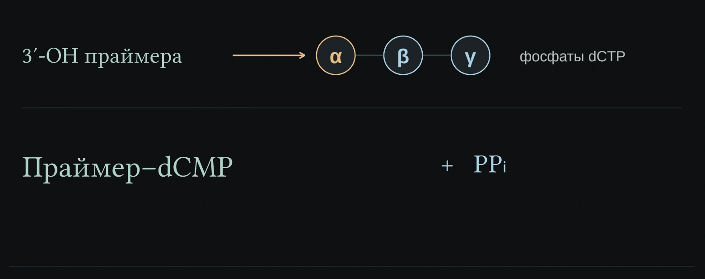
В классической двухметалльной модели Mg²⁺ A располагает и активирует 3′-OH праймера. Mg²⁺ B взаимодействует с фосфатами входящего субстрата. Оба иона помогают стабилизировать перераспределение зарядов во время реакции. Чтобы связь образовалась, реагирующие группы должны принять подходящую конфигурацию.
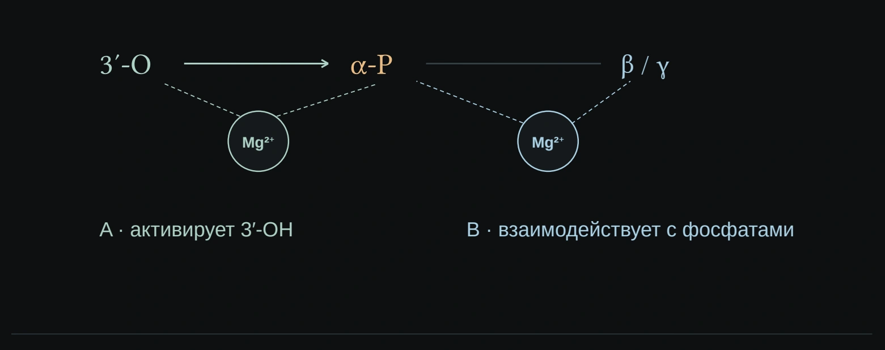
Теперь сравним, как два кандидата проходят одну и ту же реакцию. Откуда берётся избирательность полимеразы →
Откуда берётся избирательность полимеразы
Входящий дНТФ может связаться с полимеразой и уйти обратно. Чтобы он остался в ДНК, должны принять подходящее положение матричное основание, 3′-OH праймера и α-фосфат кандидата. Сравним, как часто к этой реакции приводят разные пары.
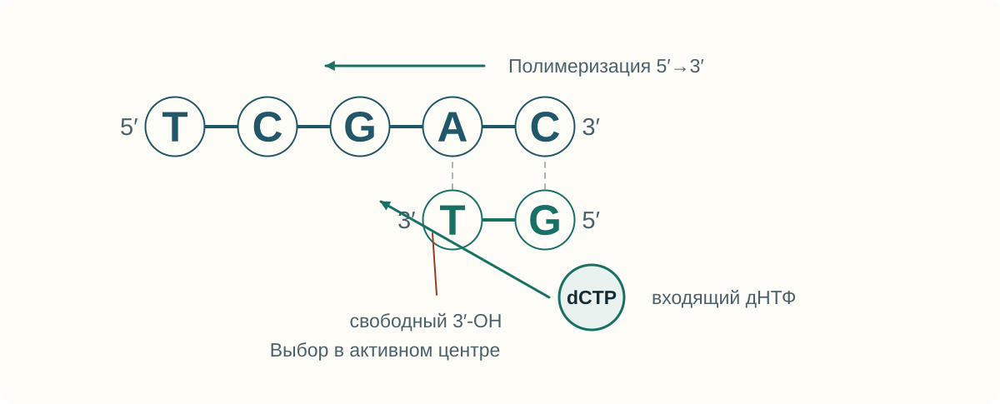
Различие между правильным и ошибочным дНТФ проявляется в нескольких наблюдениях: насколько быстро он связывается и уходит, как перестраивается фермент и как быстро происходит химическая реакция. Простого сравнения числа водородных связей недостаточно. Даже если два кандидата связались с сопоставимой прочностью, один может дольше оставаться в геометрии, подходящей для химической реакции. Экспериментальные отношения эффективностей включения сравнимы при определённой полимеразе, матрице и концентрациях. Пространственная схема показывает, почему геометрия важна, и оставляет скорости для измерения.
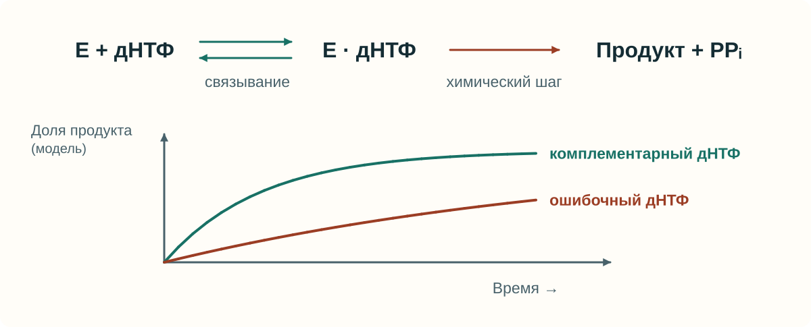
Kuchta, Benkovic и Benkovic, 1988 · кинетика фрагмента Кленова
В опытах Кухты и соавторов с фрагментом Кленова ДНК-полимеразы I измеряли образование продукта с разными дНТФ. Основная часть начальной избирательности в их системе приходилась на снижение скорости образования связи для ошибочного нуклеотида. Следующее включение поверх неспаривания тоже замедлялось. Из этого следует проверяемый прогноз о распределении продуктов по времени. В прочих полимеразах отдельные стадии могут вносить другой вклад.
Как из кривой получается оценка точности
В опытах Liptak и соавторов для каждой концентрации дНТФ измеряли накопление удлинённых молекул во времени. Из временной кривой получали наблюдаемую константу скорости kobs. На следующем графике по горизонтали уже концентрация, по вертикали kobs. Верхний предел обозначают kpol. Kd,app соответствует концентрации, при которой достигается половина этого предела. Это кажущийся параметр всей наблюдаемой реакции. Из него одного нельзя восстановить равновесное сродство исходного комплекса.
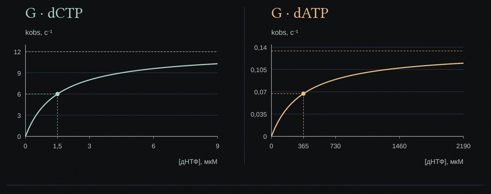
В начале гиперболы kobs ≈ (kpol / Kd,app) × [дНТФ]. При матричном G у Pol β дикого типа получаем 12 / 1,5 = 8 мкМ⁻¹·с⁻¹ для dCTP и 0,134 / 365 ≈ 3,7 × 10⁻⁴ мкМ⁻¹·с⁻¹ для dATP. При равных низких концентрациях отношение около 22 000. При разных концентрациях каждый начальный наклон умножают на концентрацию своего кандидата. Число относится к указанным условиям и репаративной Pol β.
При всех механизмах отбора неправильный кандидат иногда попадает в цепь. Один тимин за репликативной вилкой →
Один тимин за репликативной вилкой
За репликативной вилкой только что появилась пара G·T. На старой цепи стоял G, а на новой напротив него оказался T. Представь, что этот дуплекс дошёл до следующей репликации. Какую пару получит каждая из двух дочерних молекул? Сделай на бумаге два наброска. На первом ошибка сохранилась до копирования, на втором участок новой цепи успели восстановить. Оставь место для обеих дочерних молекул в каждом случае.
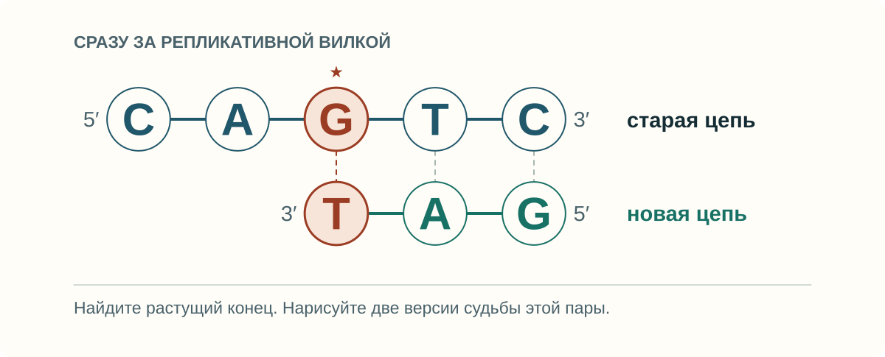
У G и T в этом примере обычное химическое строение. Затруднение возникает из-за того, какие остатки оказались друг против друга. Исходную информацию выдаёт история синтеза. Нам известно, где старая цепь, поэтому по её G восстанавливается C. По одному рисунку пары без сведений о происхождении цепей возможна и вторая история. На матрице T мог ошибочно появиться G. Для этой истории исходным партнёром T был A.
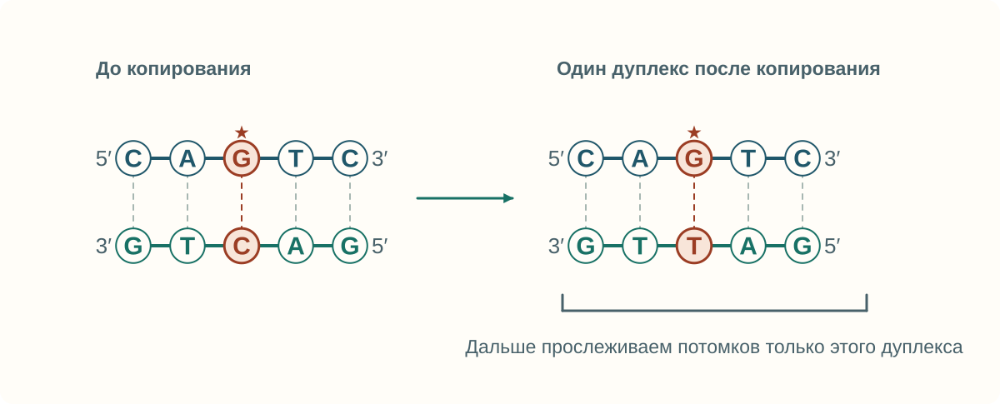
В каждом поколении «старая» цепь означает цепь, существовавшую до очередного копирования. Однако метку ★ мы однажды присвоили конкретной молекулярной нити. Через цикл временная метка возраста изменится, а ★ по-прежнему останется на исходной G-содержащей цепи. Если путать эти обозначения, легко по ошибке поставить две звезды сразу.
Пока T крайний, его можно удалить прямо с растущего конца. Гидролиз на растущем 3′-конце →
Гидролиз на растущем 3′-конце
Допустим, T всё же встроился. Последняя пара G·T затрудняет следующее присоединение. У репликативной полимеразы с 3′→5′-экзонуклеазной коррекцией, например у эукариотической Pol δ, одиночный участок праймера может перейти в корректирующий центр. Кончик отделяется от матрицы, и там вода участвует в гидролизе фосфодиэфирного остова. Удаляется концевой dTMP, уже бывший частью цепи. Его трифосфатная форма была субстратом на предыдущей стадии.
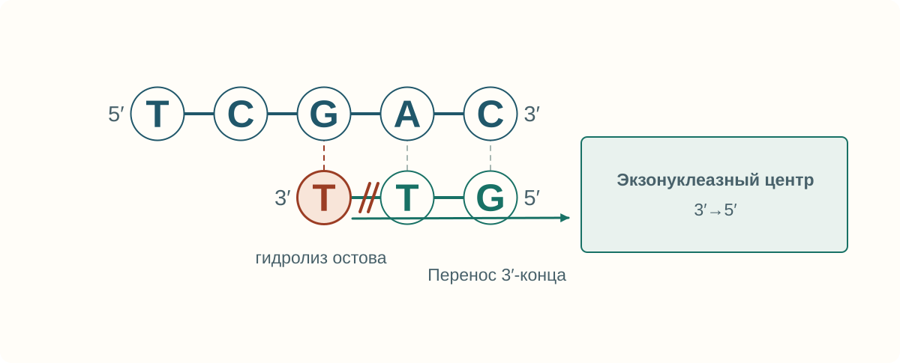
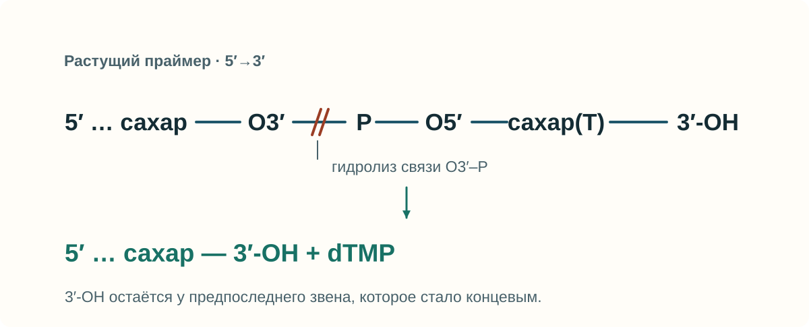
Укороченный праймер возвращается в полимеразный центр. Теперь входящий dCTP может образовать C·G, и то же локальное место снова участвует в удлинении. Для сравнения путей важна позиция дефекта. Концевой нуклеотид может попасть в экзонуклеазный центр, а неспаренный остаток внутри уже скопированного дуплекса потребует иного механизма доступа.
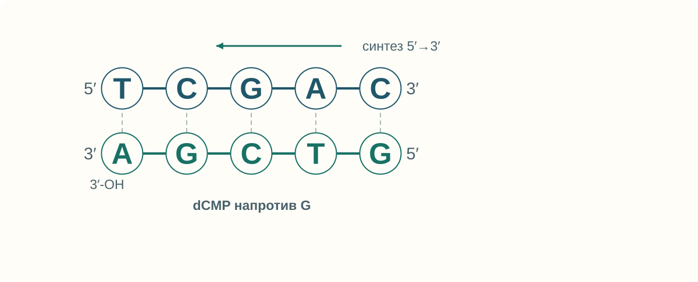
Химические увеличения и анимация
Если G·T уже внутри дуплекса, что именно может сообщить клетке о возрасте цепей?
Где появляется избирательность коррекции
У Pol δ синтез и экзонуклеолиз идут в разных активных центрах. Если неверный конец медленно удлиняется, он чаще успевает перейти к экзонуклеазе. В опыте с фрагментом Кленова заметная часть избирательности возникала до гидролиза, когда разные концы по-разному распределялись между состояниями фермента. В модели с двумя эффективными исходами вероятность коррекции равна kкорр / (kкорр + kудл). Если удлинение продолжается, первоначальная ошибка оказывается внутри цепи и прямое удаление последнего звена её уже не захватывает.
Если коррекция пропустила T, его дальнейшая судьба зависит от того, успеет ли клетка отремонтировать дуплекс до нового копирования. Как ошибка становится устойчивой заменой →
Как ошибка становится устойчивой заменой
На схеме ниже в исходном дуплексе известны обе последовательности. Комплементарные цепи антипараллельны. Поэтому, даже когда нижняя цепь изображена слева направо как 3′→5′, полимераза по ней синтезирует новую 5′→3′. Дополни обе пустые цепи по буквам матриц и проверь концы. Для записи пары держи ориентацию исходной референсной цепи ★ и ставь её сторону первой в обеих дочерних молекулах.
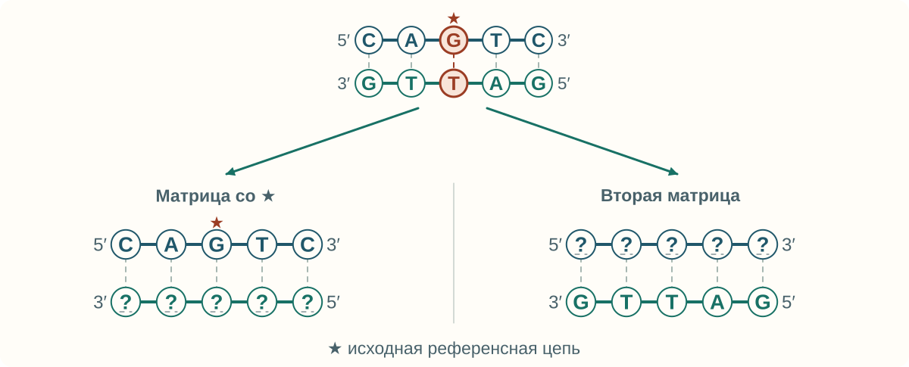
Статические кадры для сверки
Полуконсервативное копирование сохраняет по одной физической цепи в каждой дочерней молекуле. Старая G-содержащая цепь даёт G·C. Цепь с T, бывшая новой в предыдущем цикле, даёт T·A, то есть A·T при записи по верхней референсной стороне. В этой второй линии обе цепи комплементарны. Обычное распознавание несоответствия уже не выдаёт прежнюю G·C. В пределах модели замена зафиксировалась в момент появления комплементарного потомка с A·T. Это фиксация состояния в одной молекулярной линии, а в популяционной генетике слово «фиксация» относится к достижению частоты аллеля 1.
Иногда рассуждают так: поскольку T появился по ошибке, его копия тоже должна содержать несоответствие. Правый дочерний дуплекс даёт проверку этого предположения. Матрица с T диктует вставку A, и готовая пара комплементарна. Значит, правильная по своим правилам репликация может наследовать изменение. Если до неё система репарации удалит участок новой цепи с T и достроит его по G, обе линии получат G·C. Важно, до какого момента доступна информация о месте и происхождении ошибки.
Что же происходит раньше, пока T ещё стоит на растущем конце?
Чтобы своевременный ремонт вернул G·C, нужно выбрать именно новую цепь. Что распознаёт MutS →
Что распознаёт MutS
Для пострепликативной репарации неспариваний, MMR, нужны три молекулярные операции. Сначала система локализует неправильное спаривание или небольшую петлю. Затем использует отдельный сигнал, чтобы выбрать цепь. Наконец удаляет её участок с ошибкой и заполняет его по оставшейся матрице. Сравнение этих операций помогает читать данные. Кристаллическая структура комплекса распознавания даёт информацию главным образом о первой операции.
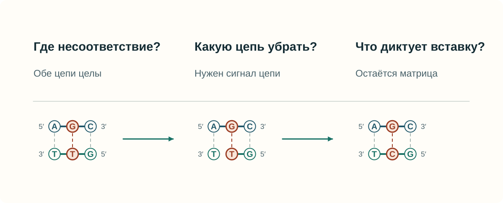
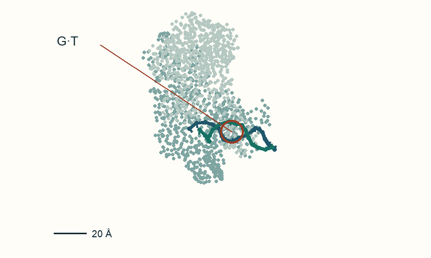
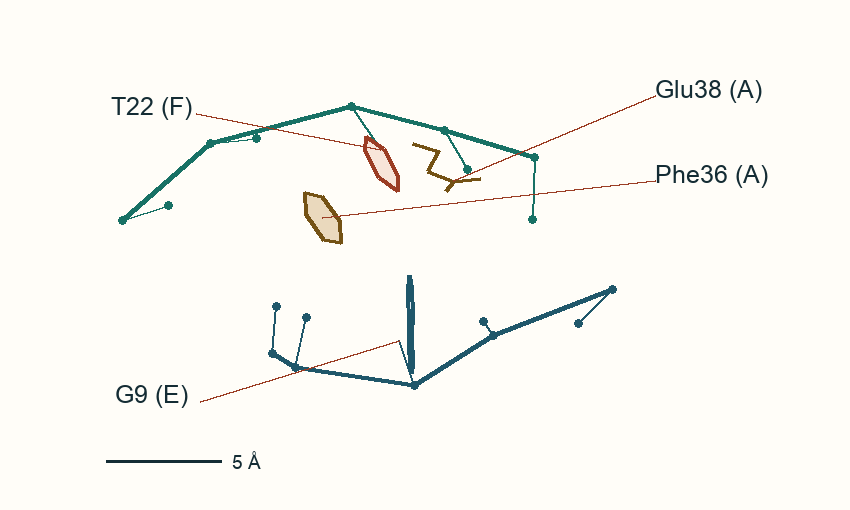
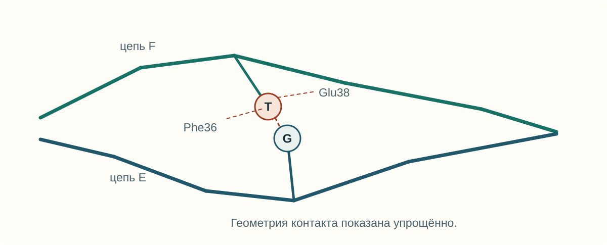
В структуре 1E3M бактериальный MutS связан с дуплексом G·T. Траектория ДНК изгибается. В локальном увеличении видно, что область Phe36 и Glu38 одной субъединицы подходит к T22 цепи F. У гуанина напротив обозначение G9 цепи E. Цепи E и F здесь идентификаторы в банке структур. Они не кодируют возраст цепей. Рентгеновская дифракция и построенная модель описывают пространственное расположение атомов в этом комплексе. Из неё самой не следуют направление репарации, последовательность событий во времени и то, какой нуклеотид надо удалить в клетке.
Повернуть молекулярную модель
Зелёный — белок, оранжевый — ДНК. Проекция по экспериментальным координатам. Ползунок поворачивает модель вокруг вертикальной оси.
MutS замечает ошибку, а у E. coli отдельный сигнал указывает, где надрезать нить. Как выбирается новая цепь у E. coli →
Как выбирается новая цепь у E. coli
Посмотри на G·T слева и GATC справа. Это разные участки одного дуплекса. У E. coli Dam-метилаза метилирует аденин в GATC. При копировании метка уже присутствует на родительской цепи, а вновь синтезированная цепь некоторое время остаётся неметилированной. Такой дуплекс временно полуметилирован. На рисунке последовательность нижней цепи в этой позиции написана 3′–CTAG–5′. При чтении от её 5′-конца это тоже GATC.
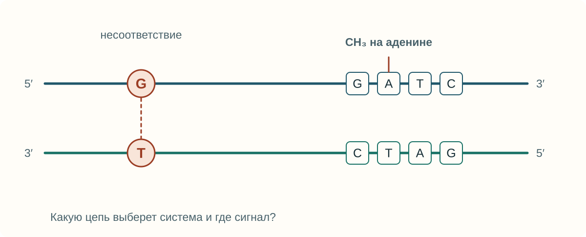
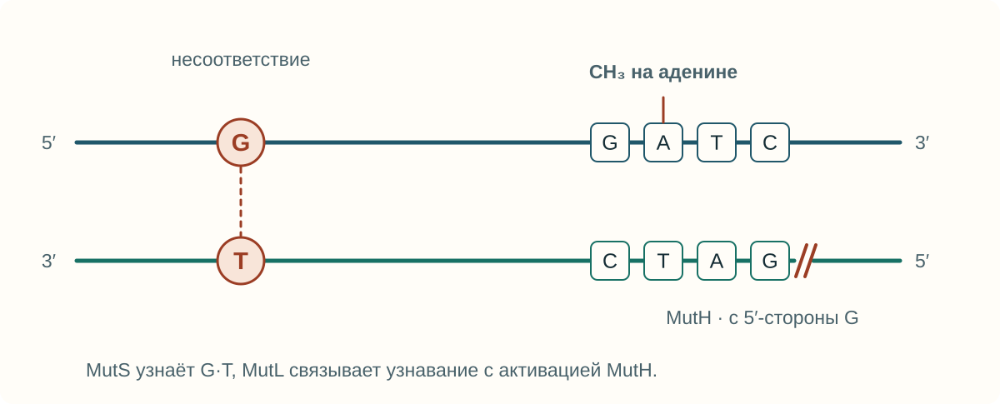
Lahue, Au, Modrich, 1989 · реконструкция метил-направленной MMR
После надреза с участием хеликазы и экзонуклеаз удаляется отрезок выбранной цепи до неспаривания и дальше него. Оставшаяся старая цепь задаёт последовательность для ДНК-полимеразы, а лигаза восстанавливает непрерывность. В опыте Lahue и соавторов с очищенными белками выбор цепи зависел от состояния метилирования одного GATC примерно в тысяче пар оснований от неспаривания. Эта дистанция относится к субстрату эксперимента. Число звеньев между двумя зонами на рисунке условно.
У эукариот надрез связан с ориентацией кольцевого зажима. Как надрез и PCNA направляют MMR у эукариот →
Как надрез и PCNA направляют MMR у эукариот
Теперь оставим ту же пару G·T и заменим рисунок сигналов. В репликационно-связанной модели эукариотической MMR одна цепь уже имеет нарушение непрерывности. Например, на отстающей цепи временно существуют границы фрагментов Оказаки. Загрузчик RFC ориентированно устанавливает кольцевой зажим PCNA в области подходящего стыка. Грани зажима различимы, поэтому ориентация зажима несёт информацию о полярности загрузки. MutSα распознаёт G·T, а PCNA помогает активировать и направить эндонуклеазную активность MutLα.
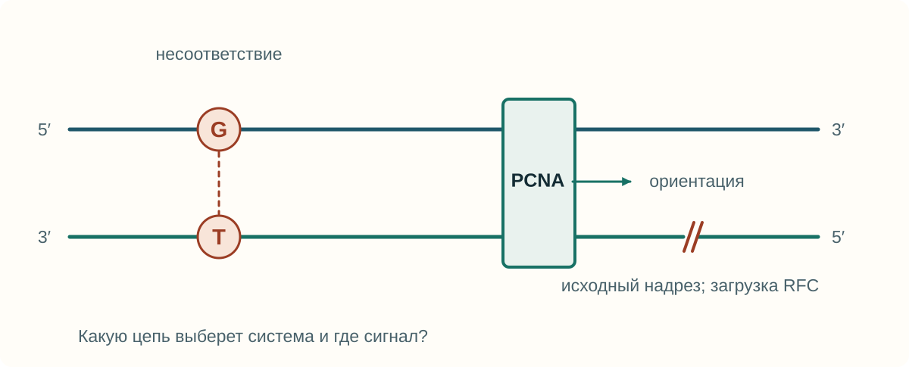
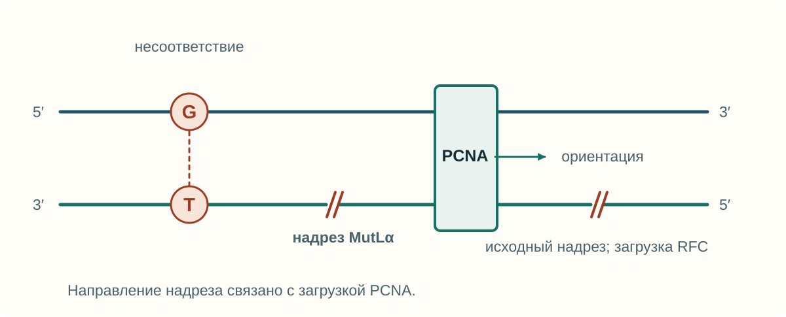
Pluciennik и соавт., 2010 · PCNA и направление надреза MutLα
В восстановленной системе человека на субстрате с надрезом RFC загружает PCNA, а MutLα преимущественно надрезает цепь, в которой был исходный разрыв. Это проверяемая причинная связь. Можно приготовить два дуплекса с одинаковой G·T и менять, на какой цепи расположен исходный надрез. При выборе цепи с T ожидается G·C, при выборе цепи с G — A·T. Неповреждённый согласованный дуплекс добавляет контроль фоновых надрезов. Такой опыт показывает, чего достаточно в данных условиях. Для разных участков репликативной вилки в клетке вопрос о доступных сигналах надо задавать отдельно.
Откуда берутся надрезы и что проверяли в опыте
У отстающей цепи временные разрывы остаются между несшитыми фрагментами Оказаки. Комплекс RFC загружает кольцо PCNA с ориентацией, заданной местом загрузки. В реконструкции Pluciennik и соавторов исходно надрезанное кольцо давало эффективную загрузку и преимущественный надрез выбранной нити. Замкнутое расслабленное кольцо загружало PCNA слабо. Пузырь или сверхспирализация обеспечивали загрузку и активность при сильно ослабленном предпочтении цепи.
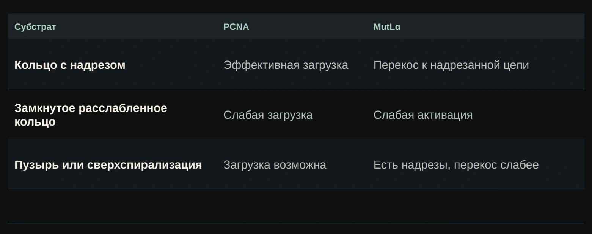
Когда нить выбрана, участок нужно удалить до самой ошибки. От надреза MMR до заплаты →
От надреза MMR до заплаты
Надрез открывает вход на выбранной нити. Если он с 5′-стороны неспаривания, EXO1 может двигаться от нового 5′-края в направлении 5′→3′ и удалить ошибку вместе с соседними звеньями. При первоначальном надрезе с другой стороны MutLα способна сделать дополнительные надрезы на той же цепи. RPA связывает обнажившуюся одноцепочечную ДНК. Затем Pol δ достраивает заплату по целой нити, а лигаза сшивает последний стык.
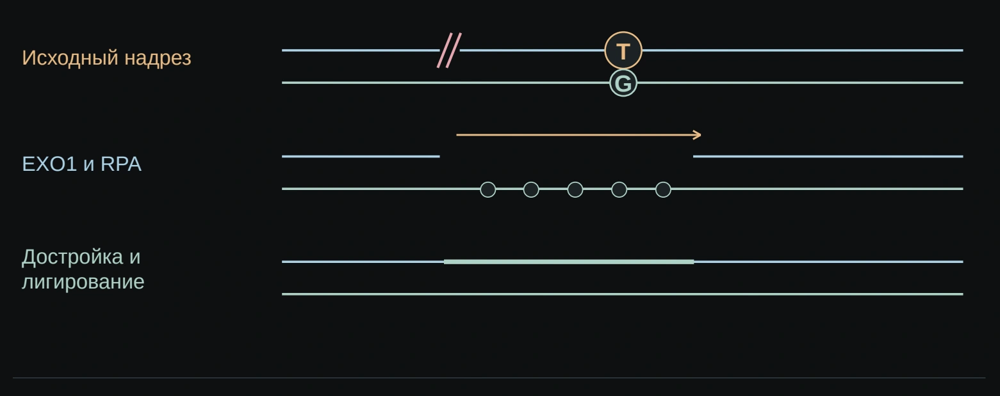
Описана также репарация без EXO1, при которой синтез вытесняет участок с ошибкой. Оба пути связывают удаление неправильной буквы с выбором цепи. Сам факт надреза ещё не означает, что неверная позиция исчезла.
MMR также разбирает ошибки длины, возникающие при сдвиге на повторе. Когда матрица и праймер сдвигаются в повторе →
Когда матрица и праймер сдвигаются в повторе
Если в ДНК повторяется один и тот же короткий мотив, праймер может временно отойти и снова спариться со сдвигом. В учебном рисунке часть новой цепи оказывается выведенной в петлю. Если эту цепь использовать как матрицу, лишняя копия повтора станет частью комплементарной последовательности. Когда в петле матрица, её пропущенный участок не попадёт в новый продукт, и наблюдаемая длина уменьшается. Положение петли даёт прогноз для длины, а выбор исправляемой цепи по-прежнему зависит от дополнительных сигналов.
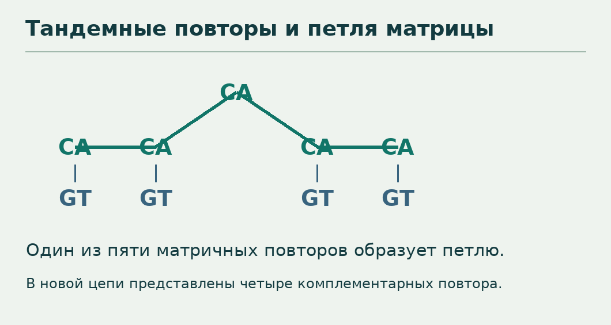
В G·T и петле нас интересовало происхождение цепи. Что изменится, если основание само химически превратилось в другое?
Теперь посчитаем, сколько ошибок остаётся после коррекции и MMR. Как считать ошибки после двух проверок →
Как считать ошибки после двух проверок
Это модель счёта, а не измеренные частоты. Допустим, на 10⁸ включений полимераза сначала сделала 10⁴ ошибок, из которых корректирующая экзонуклеаза исключила 99 %. В следующий этап входят в среднем 100 несоответствий. Если MMR исправляет 99 % именно этих несоответствий, ожидается одно оставшееся. Если доля исправления MMR равна 90 %, ожидание равно десяти. Проверяй знаменатель каждой доли. Первые 99 % относятся к ошибкам включения, следующие 99 % к оставшимся после коррекции случаям.
Среднее на 10⁸ включений характеризует модель серии событий. Отдельный цикл конкретной клетки может дать ноль, одну или несколько ошибок. Чтобы перейти к частоте устойчивых замен, необходимо проследить дальнейшую репликацию и уточнить, какие линии попадают в выборку. На исходной родословной часть молекул с ошибочно скопированным участком остаётся с исходной G·C, а изменённая линия приобретает A·T.
Почему два репортёра дают разные числа
В опыте на дрожжах CAN1 регистрирует потерю функции, которую могут вызвать разные мутации, а his7-2 регистрирует восстановление функции через более узкий набор событий. Для сравнения коррекции и MMR можно задать мультипликативное ожидание. Если исходная скорость r₀, а отдельные нарушения дают r₁ и r₂, произведение относительных эффектов даёт r₀ × (r₁ / r₀) × (r₂ / r₀).
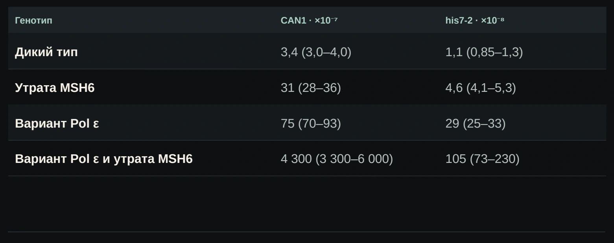
У CAN1 расчёт 31 × 75 / 3,4 даёт около 684, а наблюдение равно 4300. У his7-2 расчёт 4,6 × 29 / 1,1 даёт около 121, наблюдение равно 105. Различие результатов связано со спектром событий, доступных репортёру. Для формальной проверки взаимодействия учитывают неопределённость измерений.
До сих пор обе буквы могли быть химически обычными. При дезаминировании меняется само основание. Утрата аминогруппы меняет цитозин →
Утрата аминогруппы меняет цитозин
В исходной паре C·G цитозин химически меняется через гидролитическое дезаминирование. На C4 аминогруппу сменяет карбонильный кислород, и вместо C появляется U. Связь N1 пиримидина с дезоксирибозой и соседние связи остова в этот момент сохраняются. U может образовывать комплементарную пару с A, поэтому если повреждение U·G переживёт копирование, одна линия получит U·A. При дальнейшем копировании по матрице A может появиться наследуемая T·A в прежней ориентации C·G.
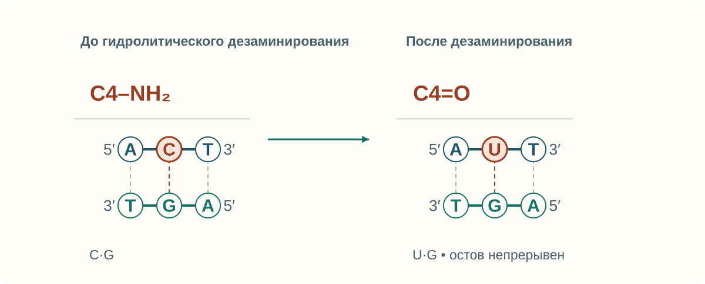
Урацил встречается в ДНК и при включении dUMP из dUTP. Если он оказался напротив A таким путём, после его удаления и достройки по A получится T·A. Значит, одинаковым первым продуктом BER может быть свободное основание, а результат достройки зависит от оставшейся матрицы. В задаче с дезаминированием признак дефекта заключён в химии основания. Для наблюдаемого U·G одновременно справедливо, что основание изменено и что пара неспарена.
Пока U стоит напротив G, исходную букву можно восстановить по второй нити. Как короткозаплаточная BER возвращает C·G →
Как короткозаплаточная BER возвращает C·G
Проследим путь участка с U·G в ядре клетки млекопитающего. На каждой стадии сравним две вещи: что изменилось в остове и где сейчас находится исходная буква.
1. Дезаминирование
В знакомой паре C·G изменилась химия цитозина. Верхняя цепь несёт U. Нижняя по-прежнему содержит G и хранит исходную информацию.
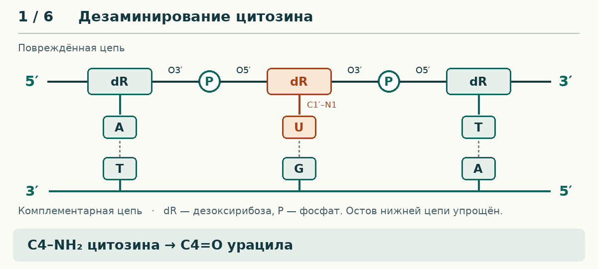
2. Удаление U
UNG выворачивает U из спирали и гидролизует связь C1′–N1. Основание уходит, а сахар продолжает соединять соседние звенья. AP-сайт означает, что основания больше нет.
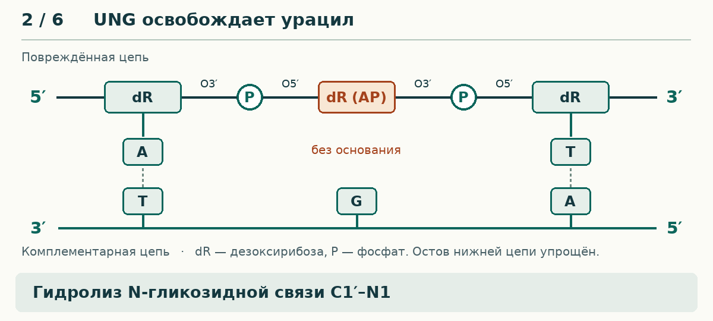
3. Надрез APE1
APE1 надрезает остов с 5′-стороны AP-сайта. Слева получается свободный 3′-OH. Справа безосновный сахар с фосфатом остаётся на конце как 5′-dRP.

4. Открытие однозвенной бреши
Лиазная активность Pol β удаляет 5′-dRP. На правом краю остаётся 5′-фосфат следующего звена. На левом уже есть 3′-OH. В целой нижней цепи напротив бреши виден G.

5. Вставка по матрице
Полимеразная активность Pol β использует dCTP и вставляет dCMP по G. Пара C·G восстановлена. Справа ещё открыт стык между 3′-OH нового звена и 5′-фосфатом его соседа.

6. Лигирование
АТФ-зависимая лигаза с помощью AMP временно активирует 5′-фосфат и соединяет его с соседним 3′-OH. AMP уходит, остов цел. При длиннозаплаточной BER полимераза, напротив, вытесняет несколько звеньев перед окончательным лигированием.

Анимация шести стадий
Рассмотрим, как гликозилаза добирается до основания внутри дуплекса. Что показывает карман урацил-ДНК-гликозилазы →
Что показывает карман урацил-ДНК-гликозилазы
У отвёрнутого от стопки аналога урацилсодержащего нуклеотида в структуре 1EMH меняется окружение. Сопоставь его положение с соседними основаниями. Картина согласуется с доступом фермента к N-гликозидной связи, скрытой в исходном дуплексе. Статическая структура показывает положение аналога в комплексе. Появление свободного U и непрерывного AP-содержащего остова проверяют измерением продуктов, как в задаче о двух образцах.

Повернуть молекулярную модель
Зелёный — белок, оранжевый — ДНК. Проекция по экспериментальным координатам. Ползунок поворачивает модель вокруг вертикальной оси.
Какой путь логичен, если повреждение связывает два соседних основания?
По структуре видна геометрия. Чтобы различить продукты реакции, нужны другие данные. Как отличить промежуточные продукты BER →
Как отличить промежуточные продукты BER
В опыте Kubota и соавторов U находился в позиции 21 цепи длиной 41 нт, метка стояла на её 5′-конце. После надреза APE1 перед AP-сайтом на меченом фланге остаётся 20 звеньев. Добавление одного нуклеотида даёт видимый 21-мер, а продолжение синтеза может дать продукты 22–23 нт. После сшивания цепь вновь может иметь длину 41 нт.
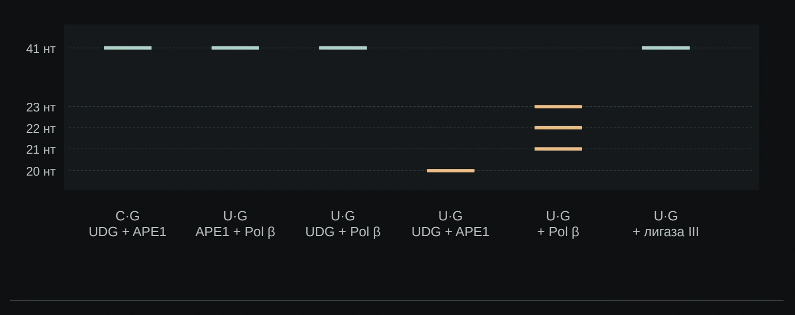
Полоса 41 нт совместима с исходной цепью с U, цепью с AP-сайтом при целом остове и восстановленной цепью с C. Для различения нужна информация о химическом состоянии позиции 21. Исходный U, например, чувствителен к гликозилазе, а восстановленный C остаётся на месте при её действии.
Что изменилось при добавлении XRCC1
В отдельном опыте субстрат уже надрезан. При XRCC1 однонуклеотидная достройка сохраняется, а количество более длинных продуктов 22–25 нт снижается. Если бы XRCC1 подавлял весь синтез Pol β, уменьшился бы и 21-мер. Наблюдение согласуется с ограничением дальнейшей достройки с вытеснением цепи.
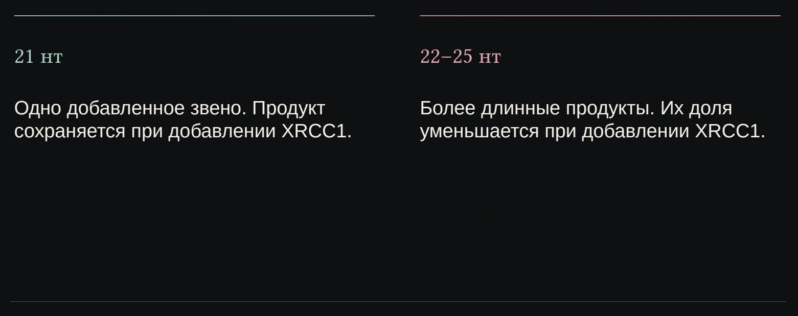
При окислении G порядок удаления оснований зависит от того, какая буква оказалась напротив. Когда BER сначала удаляет обычный аденин →
Когда BER сначала удаляет обычный аденин
Если окисленный гуанин 8-oxoG ещё стоит напротив C, OGG1 может удалить изменённое основание. Сохранившийся C задаст вставку нормального G. Если 8-oxoG успели скопировать, напротив может появиться A. Удаление окисленного G на этом этапе оставило бы A матрицей для T, и исходная пара G·C могла бы смениться на T·A.
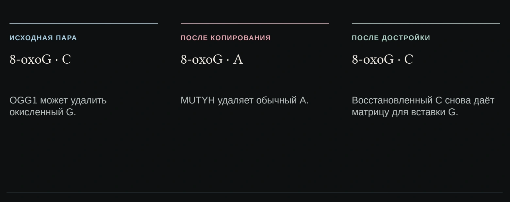
MUTYH удаляет обычный A напротив 8-oxoG. Когда в этой позиции появляется C, пара снова становится субстратом для OGG1. Порядок реакций сохраняет информацию о том, что в исходной паре стоял G.
УФ-фотопродукт создаёт связь между соседними основаниями одной цепи. УФ связывает соседние тиминовые остатки →
УФ связывает соседние тиминовые остатки
Возьмём циклобутановый пиримидиновый димер, CPD, между соседними тиминами одной цепи. Каждый тимин до реакции имеет двойную связь C5=C6. После УФ-воздействия образуются две связи между остатками, C5–C5 и C6–C6. Вместе с бывшими двойными связями, теперь одинарными, они образуют четырёхчленное кольцо. Связь проходит между основаниями одной цепи. В противоположной цепи напротив двух T остаются два A, связанные своим обычным остовом.
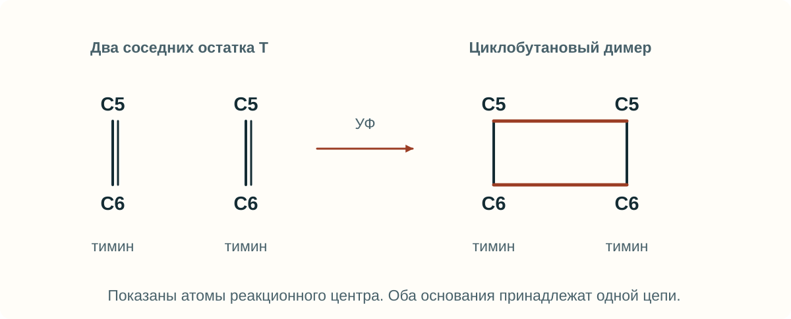
Нобелевский комитет · научное обоснование премии по химии 2015
Фотопродукт меняет локальную структуру и динамику дуплекса и может мешать копированию и транскрипции. В глобальной NER человека распознавание зависит от того, насколько легко нарушается спаривание. Слабо дестабилизирующие CPD могут потребовать помощи UV-DDB при привлечении XPC. В транскрипционно-связанной NER ранним сигналом служит остановившаяся РНК-полимераза II. После разных начальных сигналов обе ветви сходятся на проверке повреждения и локальном раскрытии ДНК с участием TFIIH. Это даёт доступ к двум точкам разреза.
Прежде чем вырезать димер, клетка должна найти и проверить участок. Как две ветви NER находят повреждение →
Как две ветви NER находят повреждение
При глобальной NER белок XPC реагирует на локальное ослабление спаривания. У некоторых CPD деформация слаба, и привлечению XPC помогает UV-DDB. В транскрипционно-связанной ветви сигналом становится остановка РНК-полимеразы II на матричной цепи работающего гена.
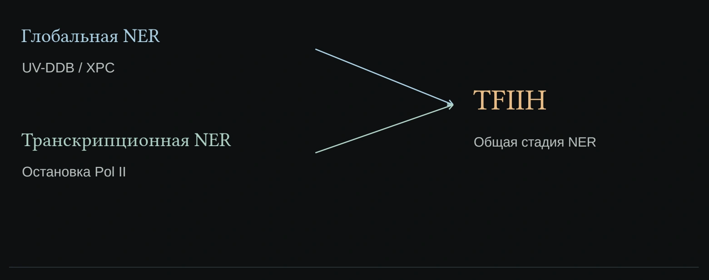
После первичного сигнала XPB в составе TFIIH помогает локально раскрыть ДНК. XPD движется вдоль повреждённой цепи, и объёмный дефект может остановить его. XPA организует раскрытый участок, RPA связывает противоположную нить. Эта нить остаётся образцом для достройки.
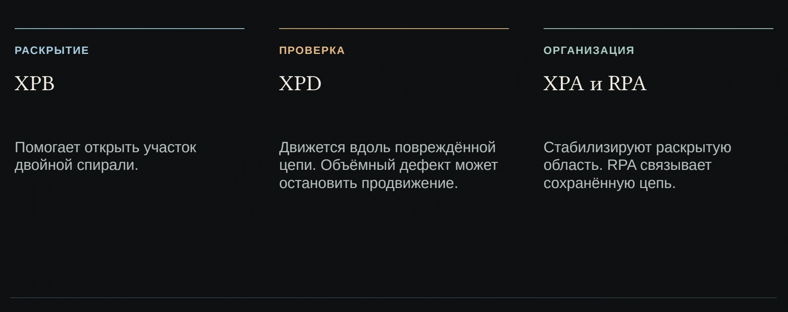
После раскрытия участка две нуклеазы режут одну и ту же повреждённую нить. Как NER вырезает отрезок одной цепи →
Как NER вырезает отрезок одной цепи
На карте человеческой NER верхняя повреждённая цепь читается слева направо от 5′ к 3′. Фотопродукт лежит между T27 и T28. Укажи два межнуклеотидных места разреза, 5|6 и 33|34, и закрась участок, который окажется свободным после двух разрезов. Затем укажи, какая цепь может направить достройку сразу через оба места.
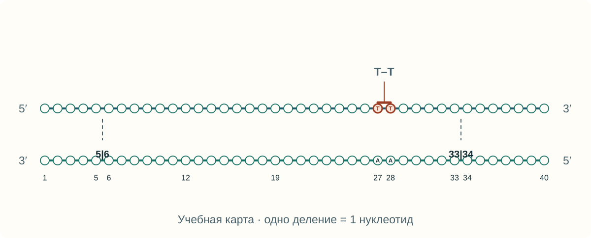
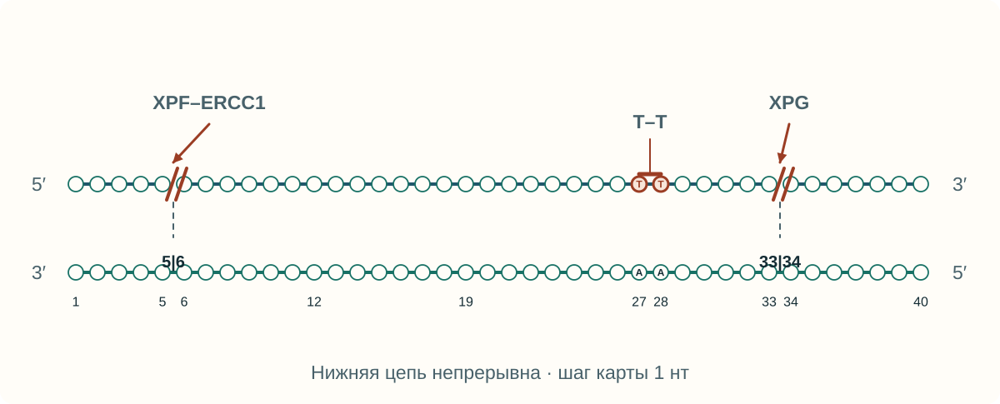
Huang и соавт., 1992 · асимметричные места надрезов NER
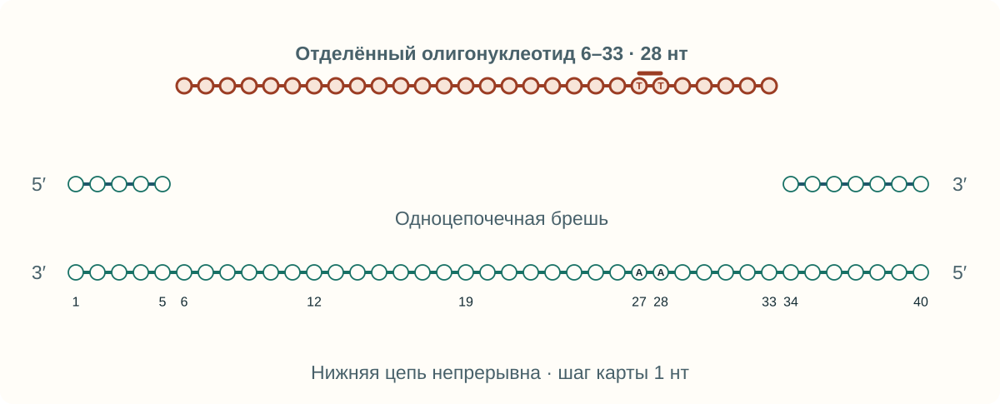
Hu и соавт., 2013 · продукты NER в клетках человека
Карта представляет учебный субстрат. В опытах с человеческими клетками извлекали первичные продукты NER с УФ-фотопродуктами, обычно длиной порядка 24–32 нуклеотидов. Число 28 относится к нашей карте, а диапазон — к измеренным продуктам. Как и в BER, у начала достройки нужен свободный 3′-OH, а после синтеза требуется лигирование. Здесь за один проход против сохранённой матрицы восстанавливается целый участок. На двух матричных A временно отсутствуют партнёры, после достройки напротив них появляются два обычных T.
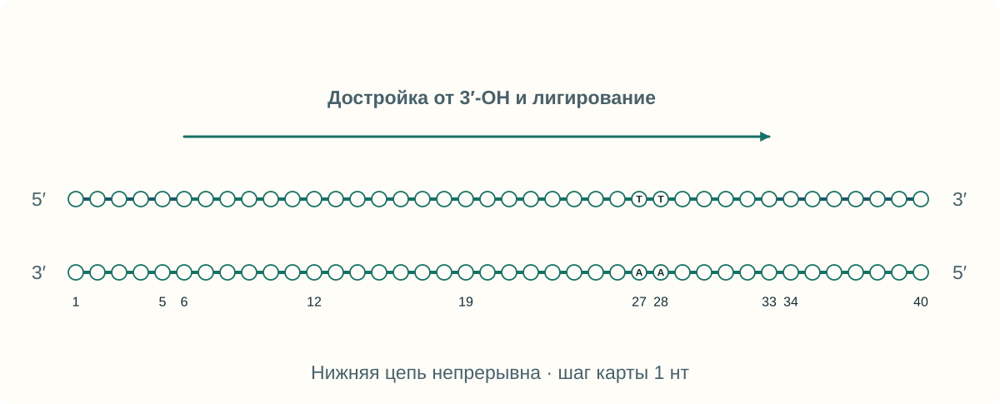
Hu и соавт., 2013 · продукты NER в клетках человека
Химические увеличения и анимация
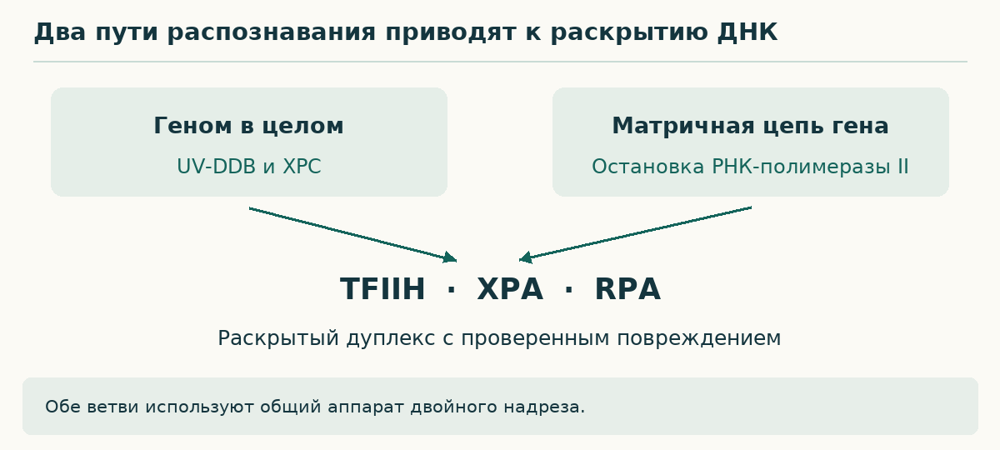
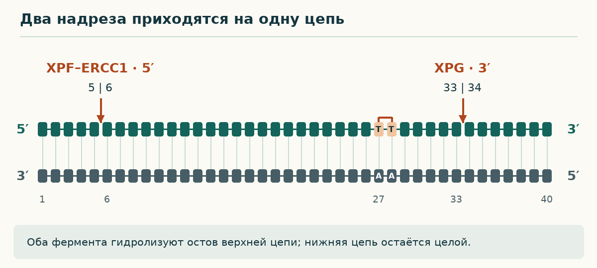
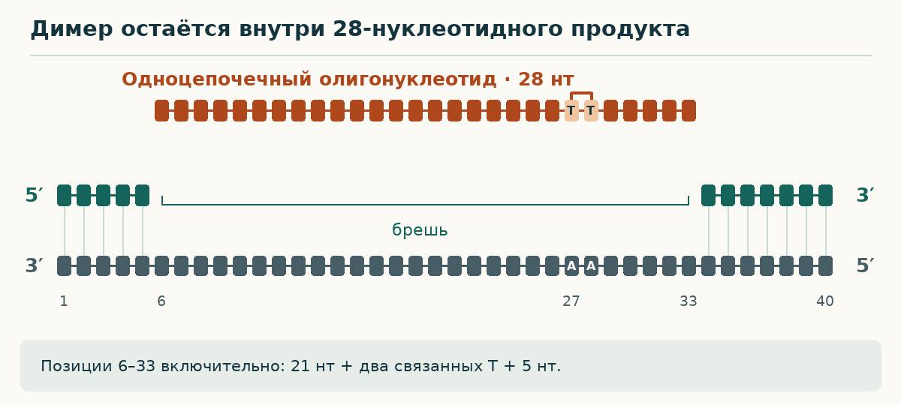

Почему заплата иногда начинается до завершения эксцизии
Координаты удалённого фрагмента определяются двумя надрезами. В опытах с человеческими белками после надреза XPF–ERCC1 синтез может начаться от открытого 3′-OH до завершения надреза XPG. Схема с готовой брешью удобна для счёта звеньев. По ней одной нельзя установить, когда началась достройка.
По координатам надрезов можно предсказать судьбу каждой метки. Куда уйдёт метка →
Куда уйдёт метка
Оставь субстрат, фотопродукт и места разрезов одинаковыми. В трёх мысленных пробах меняется только положение метки. В пробе I она при позиции 5 повреждённой цепи, в пробе II при позиции 6 той же цепи, в пробе III в нижней цепи напротив позиции 6. Для каждой сначала предскажи, будет ли меченым вырезанный 28-мер. После открытия результата найди метку на соответствующей схеме.
Статические кадры для сверки
Положение метки определяет, увидим ли мы короткий продукт по сигналу этой метки. Если метка в нижней цепи, отсутствие сигнала короткого продукта совместимо с нормальной эксцизией. Маркеры длины помогают оценить число нуклеотидов, но положение обоих надрезов и состав продукта проверяют другими наблюдениями. Контроль без димера полезен для оценки коротких фрагментов от фоновой деградации.
Если узнать последовательность вырезанного фрагмента, можно найти его исходное место в геноме. Откуда пришёл короткий фрагмент →
Откуда пришёл короткий фрагмент
XR-seq считывает последовательности выделенных продуктов NER и сопоставляет их с геномом. Так находят координаты и цепь происхождения. В контрольных клетках NHF1 доступны обе ветви, а вырезание CPD в телах работающих генов чаще наблюдается на матричной цепи. В XP-C с сохранённой транскрипционно-связанной ветвью перевес сильнее. В CS-B с сохранённой глобальной ветвью сигнал распределён шире.
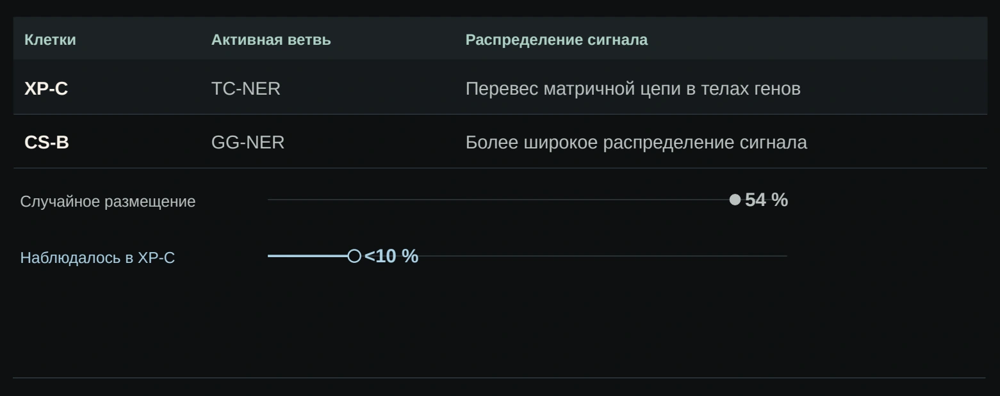
Мы сравниваем доли картированных продуктов. Чтобы посчитать, какую долю всех повреждений исправили, нужно отдельно измерить исходное распределение повреждений.
Почему поздний продукт короче
В работе Kemp и соавторов у TFIIH находили первичные продукты 24–32 нт и поздние продукты 25–30 нт. Связанные с RPA фрагменты имели длину 17–23 нт. Такая разница допускает и альтернативные координаты разрезов, и последующее укорочение. С очищенными факторами удалось получить длинный продукт без заметного укорочения, а в экстракте появлялась короткая фракция.
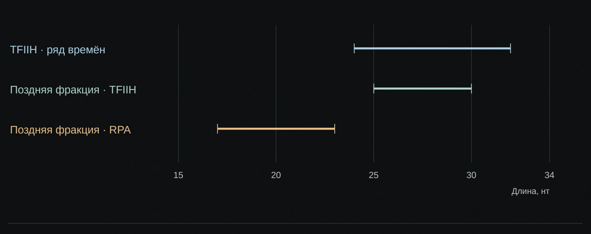
Чтобы проверить происхождение короткой полосы, проследи судьбу уже отделённой длинной мечёной фракции. Если длинная форма убывает, а короткая появляется при сохранённой метке, это поддерживает переход одной формы в другую. Нужна и контрольная проба без последующей обработки.
Теперь сравни продукты, по которым можно различить пути репарации. Как восстановить события по молекулярным продуктам →
Как восстановить события по молекулярным продуктам
В образце А после действия урацил-ДНК-гликозилазы нашли свободный U и AP-сайт при ещё непрерывном остове. В образце Б нашли отделившийся олигонуклеотид с УФ-фотопродуктом между соседними пиримидинами. Для каждого предложи путь, назови видимую улику и укажи, по какой цепи достроится повреждённый участок. Затем реши, что можно утверждать об образце Б, если известна только длина короткого фрагмента.
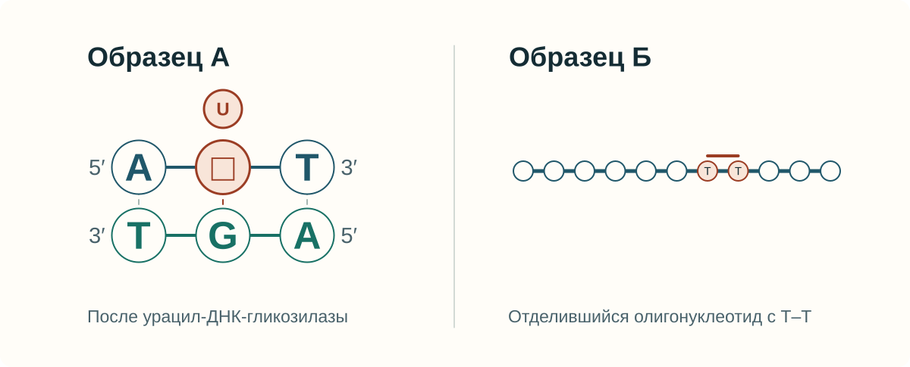
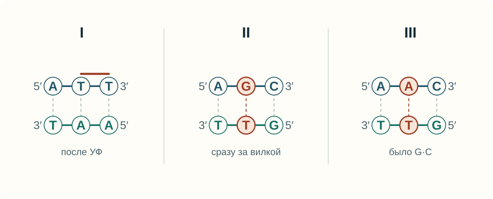
| Путь | Субстрат | Признак распознавания | Первый удаляемый объект | Промежуточный продукт | Источник информации |
|---|---|---|---|---|---|
| Корректирующая экзонуклеаза | Праймер с ошибочным 3′-концом | Геометрия концевой пары и замедление удлинения | Концевой dNMP | Укороченный праймер со свободным 3′-OH | Считываемая цепь у полимеразы |
| MMR | Неспаривание или петля в дуплексе | Геометрия дефекта и отдельный сигнал выбора цепи | Участок выбранной цепи, содержащий ошибку | Одноцепочечная брешь | Противоположная сохранённая цепь |
| BER | U·G после дезаминирования C | U в активном кармане гликозилазы | Свободное основание U | AP-сайт с целым остовом, позднее надрез и брешь в 1 нт | Матрица с G |
| NER | Дуплекс с УФ-фотопродуктом | Нарушение спаривания или остановка транскрипции, проверка после раскрытия | Олигонуклеотид повреждённой цепи с фотопродуктом | Одноцепочечная брешь, 28 нт на карте | Целая противоположная цепь |
Все разобранные заплаты использовали целую нить. Что будет, если повреждены обе? Матрица при разрыве обеих цепей →
Матрица при разрыве обеих цепей
При двухцепочечном разрыве могут потеряться звенья обеих нитей. В этом случае местный участок дуплекса уже не содержит целого образца. При гомологичной рекомбинации обработка 5′-цепей образует выступающие 3′-концы. Одноцепочечную ДНК сначала связывает RPA, затем RAD51 помогает найти гомологичную последовательность и спариться с ней. От 3′-OH полимераза достраивает недостающий участок по другой молекуле. В S- и G2-фазах образцом может стать сестринская хроматида.
При классическом негомологичном соединении концов, NHEJ, Ku связывает концы, а лигаза IV участвует в сшивании. Совместимые края можно соединить точно, если буквы на них сохранились. Когда края требуют обработки, в стыке могут появиться небольшие вставки и делеции.
Проверь себя на новом положении матрицы и новой родословной. Проверь себя на новом примере →
Проверь себя на новом примере
Теперь ★ стоит на нижней старой цепи, у основания T. В исходной позиции стояла T·A в её референсной ориентации. Напротив этого старого T ошибочно встроили G. На первой схеме дострой обе дочерние молекулы при сохранении G до следующего цикла. На второй версии мысленно сначала удали ошибочный участок новой цепи и только затем повтори копирование. В каждой версии укажи, какая пара окажется в каждой линии, и где именно впервые появляется устойчивая замена. Проверь полярность и все фланкирующие буквы.
Открыть обе заполненные родословные
Если перепутались ориентация или поколения, вернись к родословной G·T. Если цепь для исправления выбрана по букве самого неспаривания, сравни GATC у E. coli и надрез с PCNA. Если свободное основание и отделённый олигонуклеотид показались одним продуктом, поставь рядом AP-сайт после UNG и отрезок после двух надрезов.
Три задачи на данные
Список работ поможет вернуться к исходным графикам и экспериментам. Источники и авторство рисунков →
Источники и авторство рисунков
Ориентир для основного чтения — Альбертс и соавт., «Молекулярная биология клетки», 5-е изд., т. 1, § 5.2 и § 5.4. Для сверки механизмов использовано научное обоснование Нобелевской премии 2015 года.
- Альбертс и соавт. «Молекулярная биология клетки» · 5-е изд., т. 1, § 5.2 и § 5.4
- Альбертс в BioViz · § 5.2 Репликация
- Альбертс в BioViz · § 5.4 Репарация
- Нобелевский комитет · научное обоснование премии по химии 2015
- Kuchta, Benkovic и Benkovic, 1988 · кинетика фрагмента Кленова
- Lamers и соавт. · MutS и G·T · RCSB PDB 1E3M
- Lahue, Au, Modrich, 1989 · реконструкция метил-направленной MMR
- Pluciennik и соавт., 2010 · PCNA и направление надреза MutLα
- Kubota и соавт., 1996 · реконструкция короткозаплаточной BER
- Parikh и соавт. · человеческая гликозилаза · RCSB PDB 1EMH
- Hu и соавт., 2013 · продукты NER в клетках человека
- Huang и соавт., 1992 · асимметричные места надрезов NER
Новые молекулярные схемы и задачи авторские. Сцены с MutS построены из открытых координат 1E3M, а плоский рисунок интерпретирует контакты. Анимации и модели прежней редакции сохранены рядом с соответствующими механизмами. Родословные, карта 5|6 и 33|34, задачи с метками и числа точности представляют учебные данные. Размеры на геометрических рисунках условны, кроме явно обозначенных линеек координат.
Источники прежней редакции
Схемы построены для занятия. Модели показывают выбранные атомы из открытых координат PDB; расчёт частот использует условные числа.
Кинетические графики и другие первоисточники
- Liptak и соавт. · кинетика Pol β, табл. 2
- Bulock и соавт. · Pol ε и MMR у дрожжей, табл. 1
- Hu и соавт. · XR-seq, рис. 2–3
- Kemp и соавт. · судьба вырезанных фрагментов
- Johnson · двухметалльный механизм полимеразы
- Kunkel и Erie · эксцизия при MMR
- BER · репарация окислительных повреждений
- Kim и соавт. · комплексы XPC, TFIIH и XPA
- Spivak · NER и достройка
- Nickoloff и соавт. · гомологичная рекомбинация
- Chang и соавт. · NHEJ
- Ellenberger и Tomkinson · механизм лигазы